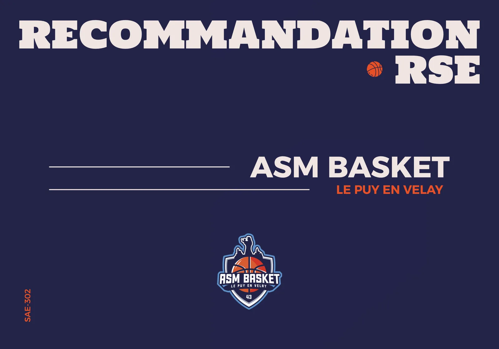
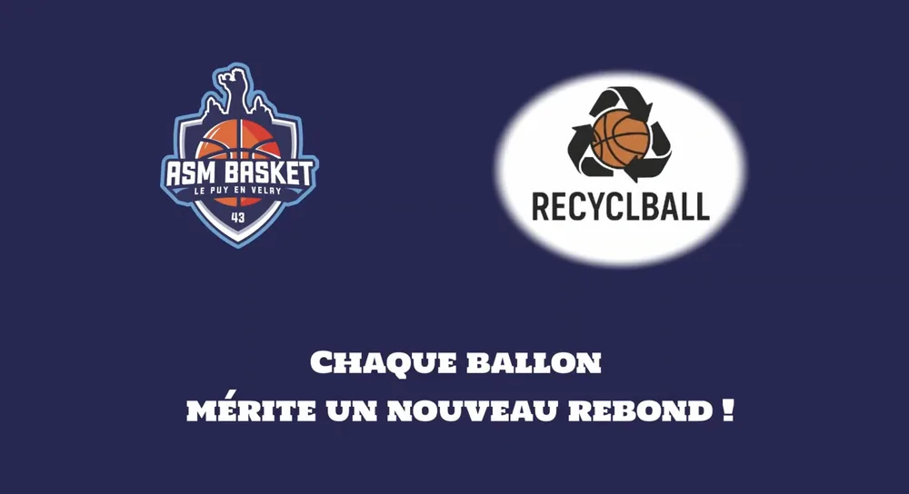
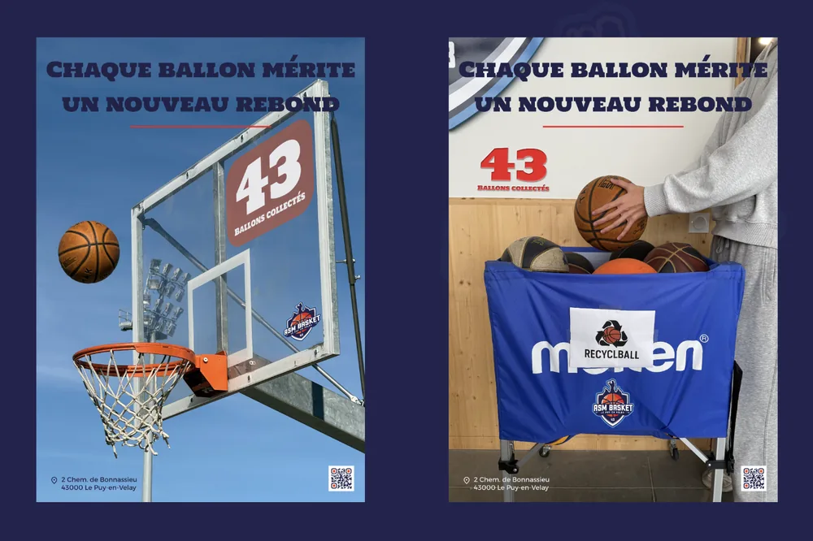
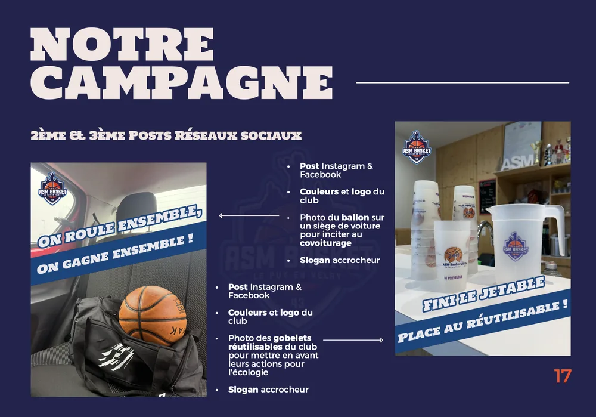

Campagne RSE
Campagne de communication RSE plurimédia pour l’ASM Basket Le Puy-en-Velay, autour du recyclage des ballons.
- Période
- Septembre - Octobre 2026
- Contexte
- SAÉ 302 · BUT MMI 2e année
- Équipe
- 5 étudiants

Le projet
Pour cette SAÉ, nous devions concevoir une campagne de communication RSE plurimédia pour un club sportif du Puy-en-Velay, autour de l’un des piliers de la responsabilité sociétale. Nous avons choisi l’ASM Basket et le pilier environnemental : nous étions le seul groupe de la promotion à traiter l’écologie.
Notre audit a montré que les actions écologiques du club étaient presque absentes de sa communication. Nous avons donc imaginé un partenariat avec Recycl’Ball, une entreprise qui transforme les ballons usagés en objets du quotidien : le club devient un point de collecte pour tout le secteur.
- 01
Audit
Communication, réseaux sociaux et site web du club
- 02
Stratégie
Pilier, cibles, objectifs et message
- 03
Création
Affiches, posts, vidéo et communiqué
- 04
Planification
12 publications de juillet à décembre
Ma contribution
J’étais chef de projet de notre groupe de cinq. J’ai planifié le projet sur Trello en attribuant chaque tâche avec une date limite : nous n’avons pris aucun retard. J’ai vérifié les productions et contacté le club pour organiser notre tournage. J’ai aussi pris en charge :
- Audit : historique du club, analyse de sa communication et audit UX du site web (navigation, accessibilité, impact sur le référencement).
- Stratégie : rédaction de la ligne éditoriale et planification des publications sur Instagram et Facebook.
- Audiovisuel : tournage au Palais des Sports, où j’ai joué le rôle de l’acteur, puis supervision du storyboard et du montage.
- Relations presse : rédaction du communiqué de presse.
Les réalisations
- Regarder la vidéo sur YouTube (nouvel onglet)

Vidéo publicitaire
Un ballon crevé finit dans le bac de collecte du gymnase.

Affiches
Avec un compteur de ballons collectés et un QR code.

Posts réseaux sociaux
Carrousels et posts pour Instagram et Facebook.